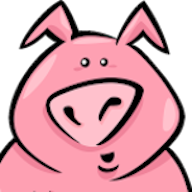

Help & FAQ
Draw squiggles. Get giggles.
How to play
- Everyone plays on their own phone, tablet or computer, in the app or at play.squigglepig.app. You need 3 to 12 players.
- One player taps Create Game and shares the four-letter room code (or the Share Room Link button). Everyone else taps Join Game and enters it.
- The host picks the points needed to win and starts the game. Everyone adds a few prompts to the trough.
- Each round you're handed a prompt to draw, then someone else's drawing to guess. Your guess becomes the next player's thing to draw, and so on around the group. Telephone, but with squiggles.
- When a chain has been round everyone, it's revealed one step at a time. Whoever wrote the original prompt judges each drawing and guess against it, and every match earns its maker a point.
- The first player to reach the target score wins.
Questions
How many players do I need?
From 3 to 12. A room holds up to 12 players, and every extra player makes each chain, and each reveal, longer.
Does everyone need the app?
No. Players on the app and players in a browser at play.squigglepig.app can be in the same room. In a browser you can also add Squigglepig to your home screen so it opens like an app.
How do I invite people?
After you create a game, the lobby shows the room code. Read it out, or tap Share Room Link to send an invite through any messaging app. Anyone who taps the link lands on the join screen with the code filled in.
How long does a game take?
The host sets the points needed to win, from 1 to 20 (5 by default). Each step is on a timer: 30 seconds for each prompt the trough needs (3 to 6 minutes at 5 points, and it moves on as soon as the trough is full), 60 seconds to draw, 45 seconds to guess and 60 seconds for the judge to score each chain.
How does scoring work?
When a chain is revealed, the player who wrote its original prompt judges every drawing and guess in it. Each one they mark as a match earns a point for the player who made it. Every blank drawing costs the player who should have drawn it a point, whether they handed in an empty canvas or ran out of time.
What if I run out of time?
Whatever you've drawn or typed when the timer hits zero is sent in for you, so the game keeps moving. An empty canvas costs you a point. An empty canvas or guess isn't passed on: the next player gets the last drawing or words in the chain that had something in them.
How do I draw fine details?
Tap 2× on the canvas to zoom in, then slide two fingers to move around. A small map shows which part of the drawing you're looking at. In a browser, scroll with the mouse wheel or trackpad instead.
My phone locked or the app closed. Can I get back in?
You never left. Closing the app or locking your phone doesn't take you out of the room: the others see you as away, and opening Squigglepig takes you straight back. While you're away in a game, your turns are sent in for you when the timer runs out (a blank drawing costs a point). A room closes after 10 minutes with nobody doing anything in it.
Can I do something else while I wait for the game to start?
Yes. In the lobby, go back to the home screen: you stay in the room, and Back to room takes you back. Play solo or dress up your pig in the meantime. When the host starts the game, Squigglepig takes you straight to it. Once a game is under way its screens stay put until it ends. To go, tap Leave game; going back asks if you're sure, too.
Can I join a game that has already started?
No. Once the host starts a game, the room is closed to new players until that game ends. Then anyone with the code can join in time for the next one.
What happens if someone leaves?
You leave a room by tapping Leave game and saying you're sure. Going to your phone's home screen doesn't take you out: you stay in the room, and opening Squigglepig takes you back. If someone leaves during a game and at least 3 players carry on, they're taken out of the rotation straight away, and their score stays on the board. If fewer than 3 would be left, their turns run out the timer and come in blank until the round ends, and the game ends there. If the host leaves or closes the app, the player who has been in the room longest and has it open takes over as host.
What notifications does Squigglepig send?
Only ones about the room you're in, and only while the app isn't open: when someone enters or leaves the lobby, and, if you're away, that the game has started or that it's your turn (once, until you're back). Turn them off in the app's menu (☰ › Settings › Room notifications) or in your phone's settings. The web version doesn't send them.
Is anything I draw saved?
Only while you play. Drawings, prompts and guesses are passed between the players in your room, and the game server keeps a copy of the game while it's running so it can carry on if everyone closes the app. It's deleted when the game ends or the room closes. There are no accounts. See the privacy policy for the details.
Someone in my game is being inappropriate.
Rooms are private, so only people with your room code can join. If someone is making you uncomfortable, leave the room and start a new game with a new code. You can also report them to alan@ralanwilliams.com; include the room code, the player's name and roughly when it happened. See the terms of service for what isn't allowed.
Something isn't working, or I have an idea.
Tap Send feedback in the app's menu (☰ on the home screen), or email alan@ralanwilliams.com. Say which phone or browser you're using and what happened.
Credits
Squigglepig began years ago as a school project with Lukas Hirsch, Chris Wells and Maxwell Hanker. I couldn't have built the original without them, and it's been a lot of fun bringing our game back to life.